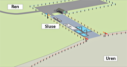

SLUSE
Det er vanlig å dele innsatsområdet inn i tre soner; ren, sluse og uren.

Man ønsker i første rekke å unngå sekundærforurensning, altså at innsatspersonell drar med seg forurensning inn i rene områder. Denne inndelingen sikrer også mulighet for gode logistikkløsninger til/fra området.
Den rene sonen brukes til bespisning, evt. losji og andre ”rene” aktiviteter som mottak av personell, utstyr, mat, drikke, etc.
Sluse-sonen benyttes til på- og avkledning, vask og dekontaminering av materiell og personell, mens i den urene sonen pågår selve saneringsarbeidet.
Et annet gode ved denne organiseringen er at det er enklere å holde oversikt/regnskap over innsatspersonell som sluses inn og ut av den urene sonen.